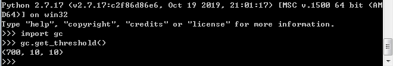

Python垃圾回收机制
在Python中，垃圾回收使用了引用计数、标记清除以及分代回收三种方式，那么这三种方式底层究竟是怎样实现的呢？
PyObject & PyVarObject
我们经常听到一句话，在Python中，一切皆对象。到底啥叫一切皆对象？？？
其实，对象映射到底层就是一块内存空间，这块内存空间存放了一些数据，对象就是对这块内存空间的抽象。
Python底层是用C写的，在C中想要分配一块内存空间存放自己需要存放的数据时，通常会先定义一个结构体，然后通过malloc函数为这个结构体开辟一块空间，这样我们就拿到了这块空间的使用权，于是可以对这块空间进行操作了。
PyObject就是这样一个在C源码中定义好的结构体，它主要包含了四个部分：
1 | |
其中，_ob_next和_ob_prev是指向前后两个PyObject对象的指针，ob_refcnt则是该对象被引用时的计数器，存放了这个对象被多少个变量所引用，ob_type也是个指针，指向了对象的类型。
PyVarObject是在PyObject之上，添加了一个ob_size来表示可变对象的长度。
1 | |
在Python中，这两个对象是所有对象的基石，之后的比如list对象、int对象都是在这两个对象之上添加了其他的内容所构成的新对象。
引用计数
我们从PyObject的结构体中可以看到，任何一个对象在创建时，必然有ob_refcnt来标识当前对象的引用数量。
在Python中写下下面的代码时：
1 | |
当python解释器执行a = 1时，会在内存空间新建一个int类型的对象，其值为1，并且引用计数值ob_refcnt的值也为1，然后创建一块名称为a的空间，用来存放int对象的地址。
当执行到b = a时，解释器创建一个名为b的空间，然后将1这个对象的地址赋值给b，1这个对象本身的引用计数值加1。
当一个对象的引用计数值大于0时，代表此时有变量指向它，而引用计数值为0时，则没有对象指向它，该对象应该被回收。
但是，Python在底层不仅仅只做了引用计数的加减，在创建一个新的对象时，Python解释器会将这个对象放入到一个环状双向链表refchain中，PyObject中的_ob_next和_ob_prev就是指向这个当前对象在链表中前后位置的对象。
这就是Python中引用计数的底层实现，通过ob_refcnt的值来控制对象的被引用个数，当值为0时，就会被垃圾回收器回收。
标记清除 & 分代收集
标记清除算法和分代收集是对垃圾回收机制的一种改进，因为在垃圾回收机制中，存在循环引用的问题。
例如，我们写下如下代码：
1 | |
当我们执行a = [1, 2, 3]时，解释器在内存空间创建一块内存空间存放列表对象，然后将列表对象的引用计数值设置为1。
同样，执行到b = [2, 3, 4]时，解释器也在内存创建一块空间存放列表对象，将该列表对象的引用计数值设置为1。
当执行到a.append(b)时，由于a有了对b对象的引用，所以b对象的引用计数值会加1，此时来到了2。
同样，当执行b.append(b)时，b也有了对a对象的引用，a对象的引用计数值也会加1，此时也来到了2。
当执行到del a和del b之后，a和b对象的引用计数值都会减1，此时a对象和b对象的ob_refcnt值都为1。
这段代码已经结束了，而我们创建的两个对象的引用计数值依然为1，由于引用计数不为0，所以此时不会被垃圾回收，这就导致了无用的对象一直驻留在内存中造成内存的浪费。
标记清除和分代收集算法就是为了解决这种循环引用导致内存无法回收问题而推出的新算法。
在分代收集算法中，有三个链表，名称分为为：0代链表、1代链表、2代链表。
当我们创建了一个容器对象时，这个对象不仅仅会加入到上面讲的refchain中，还有加入到0代链表中。
当0代链表中的元素个数到达一定阈值时，python会启动垃圾回收代码，对0代链表中所有元素进行遍历，找出是否存在循环引用的容器，如果存在，则将这两个容器的引用计数分别减1。然后判断引用计数值是否为0，如果为0则进行回收。
当0代链表的清理工作完成之后，会将元素移动到1代链表上。
同样，当0代链表完成了一定次数的清理工作之后，1代链表就会进行清理，清理过程和0代链表类似。
在Python中，我们可以通过gc模块获取到各个代清理触发的阈值：
1 | |
可以看到，在Python中默认的阈值分别为：700, 10, 10：

也就是1代链表进行了10次清理，就会触发2代链表的清理，0代链表进行了10次清理，就会触发1代链表的清理，0代链表中有700个元素时，则会触发0代链表的清理。
缓存机制
以上就是Python垃圾回收相关的内容，但是呢？Python还引用了缓存机制来避免内存频繁创建和销毁带来的开销。
缓存机制分为两类：缓存池和free_list。
缓存池机制以int类型对象和字符对象为主。Python解释器在启动时，就已经为一些小整数以及ASCII字符创建好了对象，当程序中需要用到这些小整数或者字符时，会直接返回缓存池中的地址。
例如：
1 | |
结果如下：
另一种缓存机制就是free_list，主要使用到的数据结构是固定长度的单链表。
float对象就使用了free_list来进行缓存，在float对象创建时，首先判断free_list中是否有元素，如果有元素，则从链表头取出一个float对象，然后将这个对象的值改成这次要创建的float对象的值，这样就避免了重新分配内存空间。
同样，float对象在销毁时，不会直接进行内存的释放，而是会先判断单链表中是否已经满了，如果已经满了，则释放内存，如果没有满，会将这个对象从refchain中删掉，放入到free_list中。
总结
1、引用计数为0时，对象不一定被直接释放，因为python有缓存机制
2、缓存机制分为两类：缓存池和free_list，缓存池主要为小整数和字符对象使用，free_list为float/list/dict/tuple对象使用。
3、分代收集时，0代收集的触发条件是链表中的个数，而1代和2代收集触发条件都是上一代的清理次数。
参考资料
[1] 武佩齐老师的讲解视频
[2] Python3.9.2源码
[3] 慕课网专栏
本博客所有文章除特别声明外，均采用 CC BY-SA 4.0 协议 ，转载请注明出处！